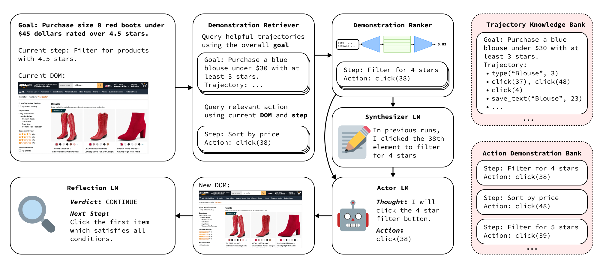

|
Michael Lutz Hi! I currently research scalable in-context learning techniques for web agents at Bardeen AI. Additionally, I am a student at UC Berkeley studying Electrical Engineering and Computer Science. I am a member of Machine Learning @ Berkeley and am fortunate to have received the Z-Fellows grant. I am also passionate about mentoring high school students at BLAST AI, an AI education organization I helped found. |
{kind=link}
ResearchI'm fascinated by reinforcement learning, robotics, and memory hierarchy. To combat the high cost of data, I am particularly interested in sample-efficient techniques for learning in complex environments with sparse rewards. Additionally, I am interested in robust demonstration retrieval mechanisms for in-context learning. |
|

|
WILBUR: Adaptive In-Context Learning for Robust and Accurate Web Agents
Michael Lutz*, Arth Bohra*, Manvel Saroyan, Artem Harutyunyan, Giovanni Campagna, arXiv, 2024 project page / arXiv Training a demonstration ranking model to optimize context for black-box models in the web agent environment. Reached SOTA text-only results on the WebVoyager benchmark accross searching, travel planning, information extraction, etc. |
Miscellanea |

|
Academic Intern, CS70 Summer 2023 |
|
|